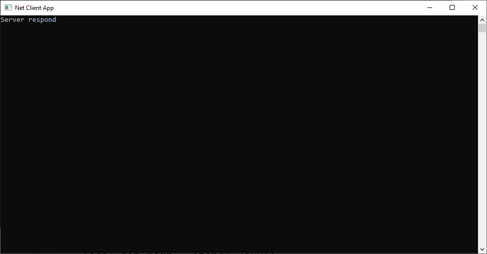
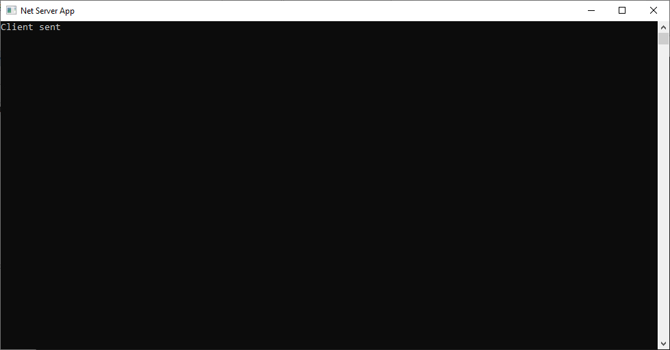

Как на С++ написать простой клиент и сервер Windows | Ubuntu Linux
Загрузить исходный код С++ WinAPI Visual Studio 2005 ЗДЕСЬ
Загрузить исходный код С++ для Ubuntu Linux ЗДЕСЬ
Для компиляции и запуска под Windows последовательность действий такая:
-
Открыть проект для Visual Studio 2005 NetClient и NetServer и скомпилировать
-
Запускаем скомпилированный ЕХЕ NetServer на выполнение; запуститься окно консольного приложения
-
Запускаем скомпилированный ЕХЕ NetClient на выполнение; запуститься окно консольного приложения
-
После запуска клиента увидим в окнах NetServer и NetClient текстовый сообщения для теста - клиент послал строку текста серверу, сервер ответил строкой текста
-
Нажимаем в окне NetServer любую клавишу окно приложения закроется; нажимаем в окне NetClient любую клавишу окно приложения закроется
Для компиляции и запуска под Ubuntu Linux последовательность действий такая:
- Зайти в Терминал Ubuntu
- Скопировать все 3 файла из папки net_lnx на рабочий стол
- В Терминале набрать команду cd Desktop что бы перейти на рабочий стол
- На рабочем столе правая кнопка мыши по файлу my.sh -> Свойства -> Разрешить выполнение файла
- В Терминале дать команду ./my.sh
- На рабочем столе получим 2 файла в результате компиляции s.out и c.out соответсвенно сервер, и клиент
-
В Терминале после компиляции запускаем файл сервера ./s.out
-
Запускаем второй Терминал, переходим на рабочий стол - запускаем файл клиента ./c.out
-
Смотрим на результат - клиент пошлет сроку текста серверу, сервер пошлет строку текста клиенту

